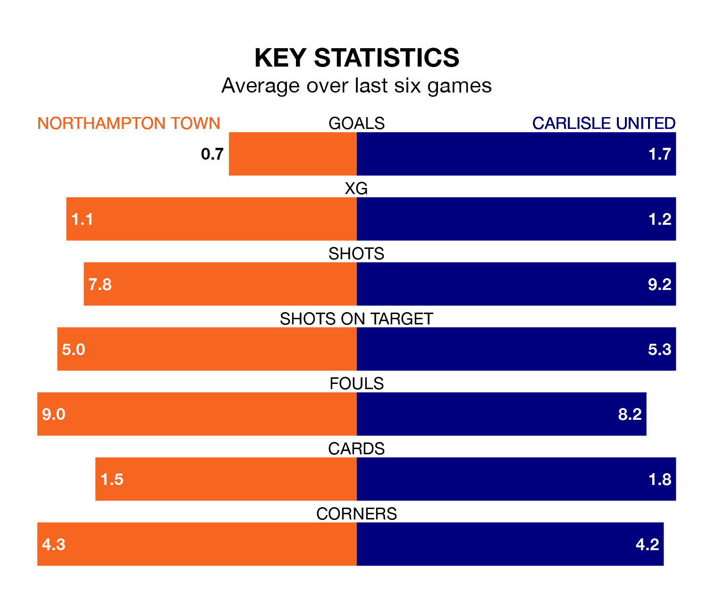

Carlisle United come to the Sixfields Stadium to play Northampton Town on Saturday in poor form, having collected just four points from their last six games.
The visitors have won one and drawn one of their last six fixtures, while the Cobblers have two wins and a draw.
Carlisle are bottom of the table after 41 games, of which they have won six and drawn nine, earning 27 points.
Northampton are 12 places ahead of United in 12th, with 16 wins and eight draws putting them on 56 points.
In the last 10 years, Northampton and Carlisle have played each other on 10 occasions. Northampton won six of them, Carlisle one, and they drew three times.
On average, the Cobblers scored 2.2 goals and Carlisle 1.0 in those matches.
Their last meeting was on December 16, when they played out a 2-2 draw.
With 39 goals in 41 games so far this season, the visitors are scoring at below the league average rate with 1.0 goals per game. And they are conceding more than average, letting in 73 goals at a rate of 1.8 per game.
Town, meanwhile, are average scorers, with 1.3 goals per game. They have conceded 1.5 goals per game.
In Sam Hoskins, the Cobblers have one of the league's sharpest shooters so far this season. He has notched 15 goals in 35 appearances, to sit fifth in the scoring charts.
His goal rate of one every 184 minutes is quicker than that of Jordan Gibson, Carlisle's top scorer with a goal every 352 minutes, and a total of seven goals in 38 games.
Northampton's last match was on Monday, a 2-0 win against Port Vale, with Mitchell Pinnock and Shaun McWilliams getting the goals for the Cobblers.
Carlisle lost 3-1 against Lincoln City last time out, also on Monday, with Samuel Lavelle on the scoresheet.
Saturday's match will be refereed by Ross Joyce, who has taken charge of 16 EFL League One games so far this season, issuing four red cards and booking 67 players. He has awarded two penalties.
The last Northampton game Joyce refereed was a 2-1 away loss to Wigan Athletic on August 12. His last Carlisle match was their 2-1 win at home against Burton Albion on October 24.
Updated: 16:41 (UTC), 04/04/24